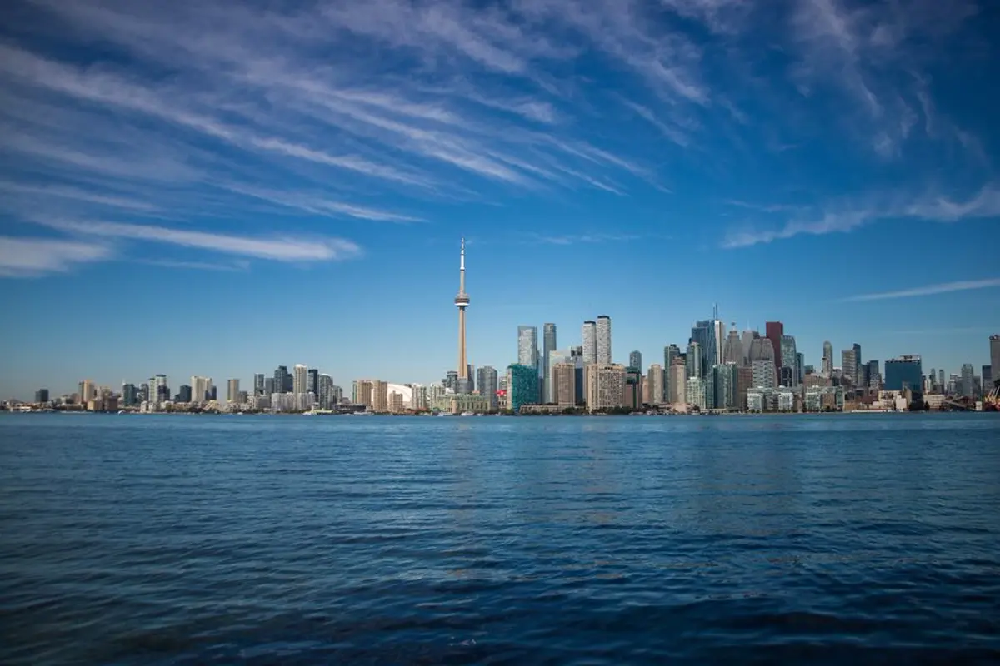

Что изменилось (официально, в силе): 28 октября 2026 Immigration, Refugees and Citizenship Canada (IRCC) объявило, что вступили в силу новые денежные штрафы для тех, кто нарушает закон, оказывая платные иммиграционные или гражданские консультации либо представительство. Они касаются лицензированных консультантов, адвокатов и других уполномоченных представителей, а также всех, кто работает без разрешения. Итоговые правила будут опубликованы в Canada Gazette, Part II 4 ноября 2026; проект был опубликован 21 декабря 2024.
Суммы: CAD 5 000 за платные консультации или представительство без разрешения; CAD 15 000 за сознательную подачу ложных или вводящих в заблуждение сведений от имени заявителя либо помощь в этом; CAD 10 000 за отказ предоставить документы при проверке. Формула IRCC: (A + B + C) × D — базовая сумма, плюс ещё CAD 15 000, если искажение привело к ошибке, например к одобрению, плюс деньги, полученные представителем, умноженные на 0,5 при первом нарушении, 1,0 при втором и 1,5 при третьем и далее. Штрафы за несколько нарушений могут достигать CAD 1,5 млн по одному уведомлению.
Действует по всему миру, имена публикуются: IRCC указывает, что правила применяются «независимо от того, где вы находитесь». Представителя за пределами Канады тоже могут оштрафовать и назвать. IRCC опубликует имя, компанию, вид нарушения, сумму и факт оплаты; публичный реестр ожидается в 2027 году, после первых штрафов. Процедура со сроками: 30 дней на ответ на предварительное уведомление, затем 30 дней на оплату или запрос пересмотра назначенным проверяющим.
Кто вправе брать деньги за иммиграционную работу в Канаде: только действующие члены College of Immigration and Citizenship Consultants, коллегии адвокатов провинции или территории либо Chambre des notaires du Québec, а также параюристы Онтарио с лицензией Law Society of Ontario. Совет IRCC: проверьте реестр до оплаты и не пользуйтесь услугами тех, кого там нет. Платного представителя нужно указать в форме IMM 5476.
Почему это важно в Узбекистане: агенты, обещающие канадское рабочее разрешение «с гарантией» и вписывающие в заявку ложные job offer, выписки или историю поездок, подвергают риску вас. Искажение сведений грозит заявителю отказом и пятилетним запретом на въезд в Канаду, а теперь и крупным штрафом агенту. Заявление подписываете вы, и вы отвечаете за каждый ответ.
Как работаем мы: Сарвар Рахманов, консультант RISK L.L.C. (не адвокат), объясняет официальные требования и помогает понять, какой маршрут вам подходит. Для подачи канадской заявки с платным представителем выбирайте специалиста из официальных реестров выше или подавайте сами через портал IRCC. Вопросы о новых правилах или о представителе, которого вам предложили? WhatsApp: +998 99 616 31 66.
Официальные источники
- IRCC news release: New penalties for fraudulent and unauthorized immigration and citizenship representatives (October 28, 2026)
- IRCC: What happens if you break the rules when giving advice or representation (penalty amounts, formula, review)
- IRCC: Find out if your representative is authorized
- College of Immigration and Citizenship Consultants: public register
- Canada Gazette, Part I: draft regulations (December 21, 2024)
Проверено по официальным источникам на дату публикации. Это общая информация, а не юридическая консультация; правила могут меняться.
Хотите понять, как это касается вас?
Бесплатная первая консультация в WhatsApp или Telegram.